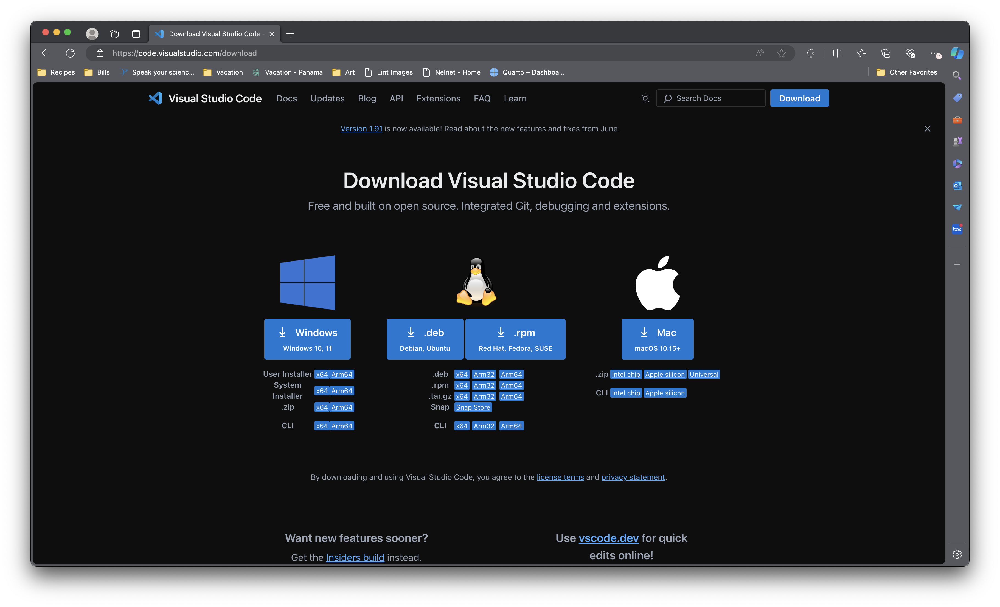
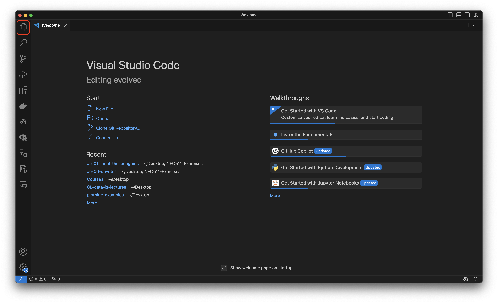
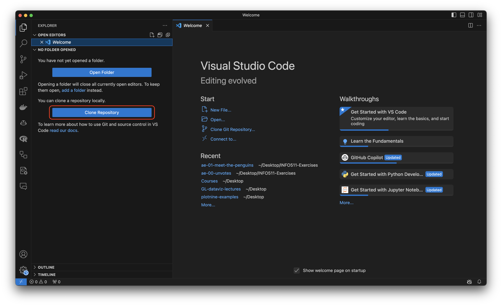
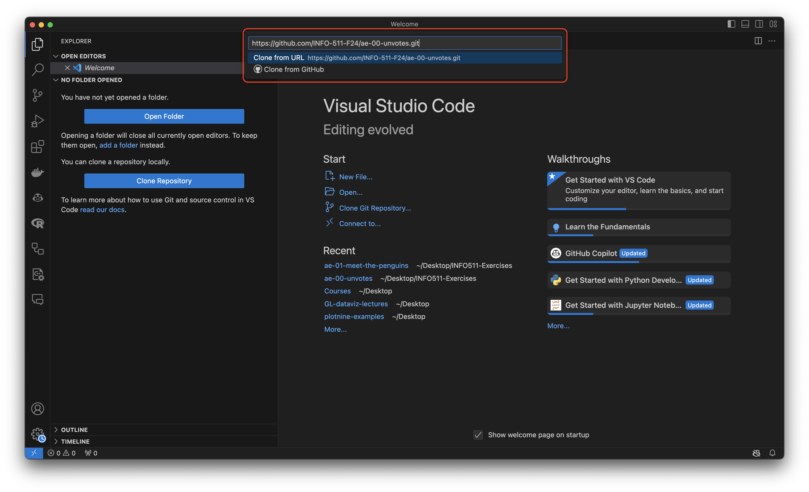
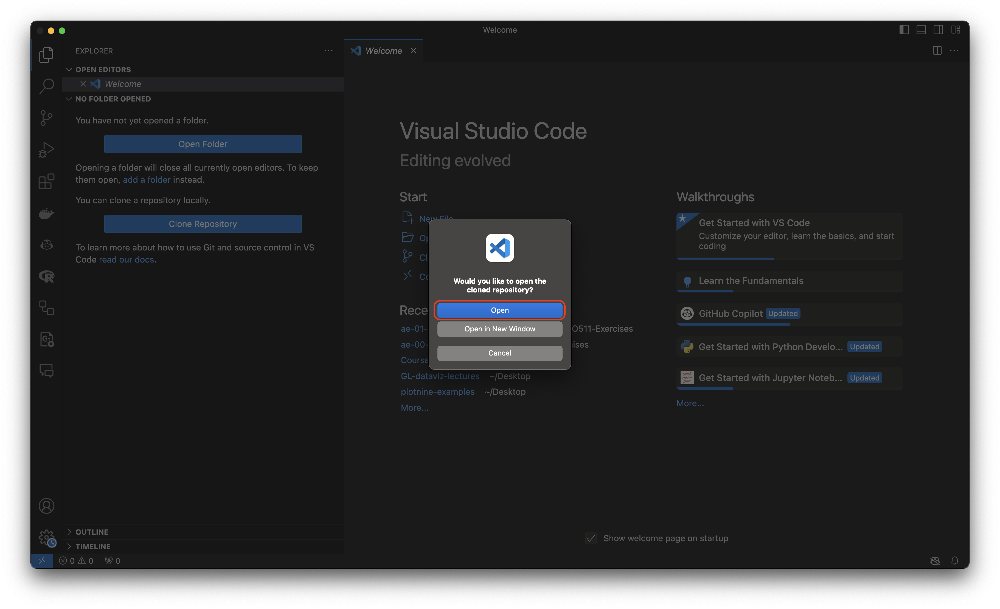
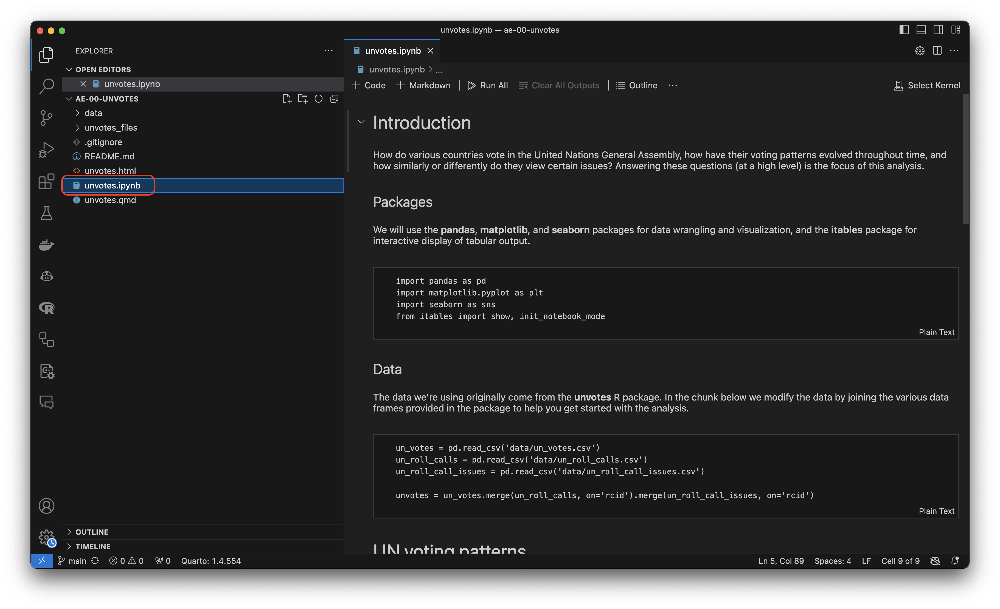
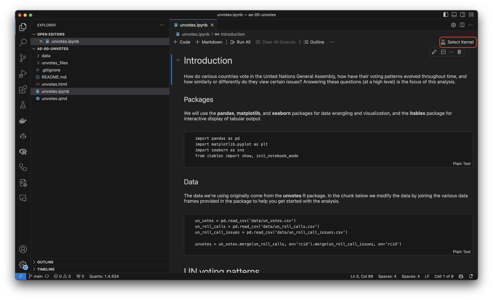
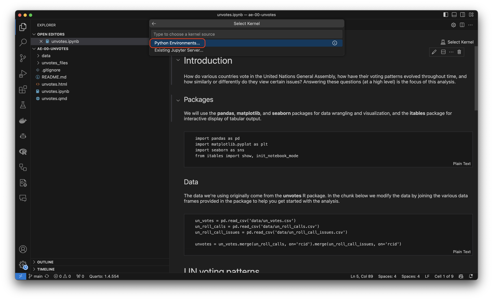
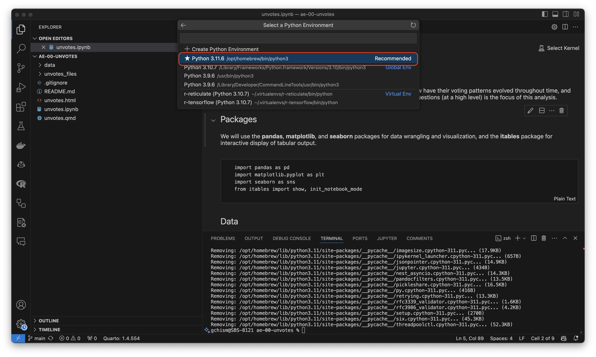
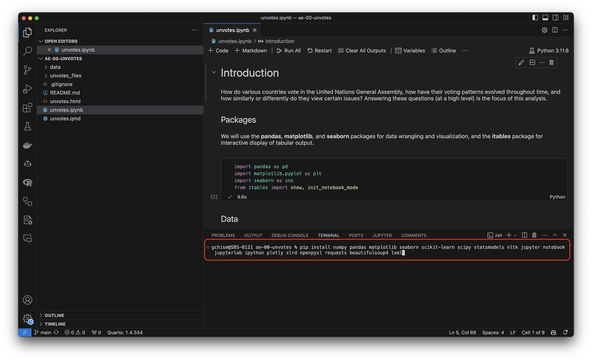

Setting up Python
Introduction
The steps to installing Python are seemingly straightforward but can result in an array of different bugs. For INFO 523, I’ve chosen a workflow that will standardize your installations and (hopefully) prevent these bugs.
Installing VS Code
For all OS:
- See the following link: https://code.visualstudio.com/download

- Run through your device’s appropriate installation.
Installing Bash
For PC
- Open Windows PowerShell as Administrator
- Type
wsl –installand pressEnter - Restart your computer
- Open the Microsoft Store.
- Install a Linux distribution (e.g., Ubuntu).
- Search for “Ubuntu” (or any other preferred distribution) and click “Install”.
- Set up your Linux environment.
- Once installed, open the Linux distribution from the Start menu and follow the setup instructions.
For Mac:
- You already have
zsh, which is a Bash Shell 😊
Open a Bash Shell terminal
For PC:
- Press
CTRL + ALT + Tsimultaneously to open the terminal. - Type
bashthen pressEnter - You should have a Bash shell ready.
For Mac:
Do one of the following:
- Click the Launchpad icon
 in the Dock, type Terminal in the search field, then click Terminal.
in the Dock, type Terminal in the search field, then click Terminal. - In the Finder
 , open the /Applications/Utilities folder, then double-click Terminal.
, open the /Applications/Utilities folder, then double-click Terminal.
Install Homebrew
For Mac and PC:
- Homebrew is a package manager for macOS and Linux that makes it easy to install software. In open Bash Terminal, type:
/bin/bash -c "$(curl -fsSL https://raw.githubusercontent.com/Homebrew/install/HEAD/install.sh)"- Run through any installation steps found within the terminal.
Install Miniconda (via Homebrew)
For both Mac and PC
- Type the install command into the open terminal:
brew install --cask miniconda- Fun the following to setup your shell:
conda init "$(basename "${SHELL}")"Install Python3
For Mac and PC:
- Run the following in your terminal (check the latest Python3 version):
conda create -y -n py38 python=3.12.4 pipFor PC (Bash)
- Run the following in your terminal (this step may not work given permissions):
echo "conda activate py38" >> ~/.bashrcFor Mac (Zsh)
- Run the following in your terminal (this step may not work given permissions):
echo "conda activate py38" >> ~/.zshrcFor Mac and PC:
- Run the following in your terminal:
conda activate py38
pip install -U pip
pip install pytest
pip cache purge
conda clean -y -av
python -V
pip -V- Restart your computer + Open VSCode
Prepare VS Code for Python
- Once VS Code is open, click on the Explorer:

- Click “Clone Repository”:

- Paste the following into the text input that pops up in the top-middle: https://github.com/INFO-511-F24/ae-00-unvotes.git, which can be found at the
ae-00-unvotesexercise GitHub page:

- Click “Open”:

- Select the
unvotes.ipynbfile:

- Click the “Select Kernel” button in the top-right above the Jupyter Notebook:

- Select “Python Environments” from the middle-center drop-down options:

- From the options, select the one with “Homebrew” or “Miniconda” within in (this may look different for you than me:

Install Python Packages
- Type the following into your terminal:
pip install numpy pandas matplotlib seaborn scikit-learn scipy statsmodels nltk jupyter notebook jupyterlab ipython plotly xlrd openpyxl requests beautifulsoup4 lxml